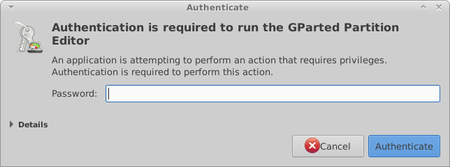
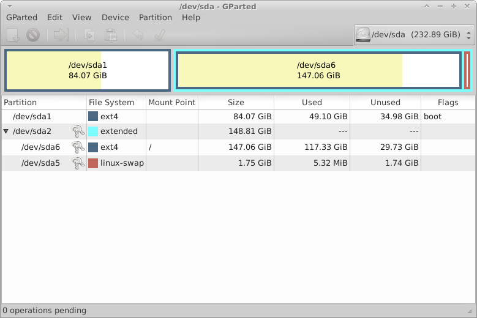

Partitioning Utility
| ITEM | DESCRIPTION |
|---|---|
| Application name | Gparted |
| Application Description | Partition Utility |
| Menu Name | Gparted |
| Installed Version | ? |
| Screen Shot version | 0.18.0 |
| Screen Shot Source | xubuntu 14.04 |
| Website | http://gparted.orghttp://gparted.org |
THIS PROGRAM CAN DESTROY DATA
Gparted is provided to help you manage hard disk partitions. You need root / admin priviledges to run this, upon running you may see the screen below before the main programs runs:

enter your administrator password to gain access to the Gparted utility.

For detailed instructions please check out the user manual for gparted [13]